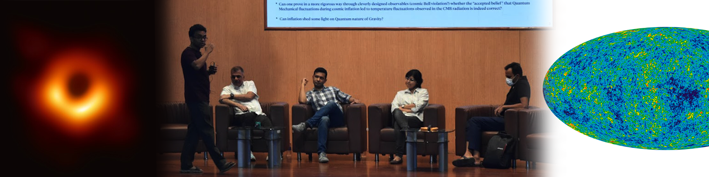
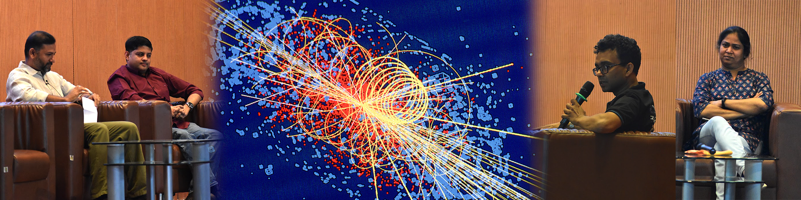
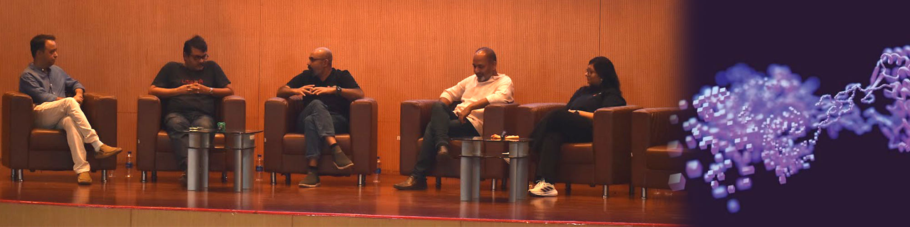

Panels
External Links
Panel 1: Astrophysics and Cosmology
Arka Banerjee introduced the audience to astrophysics with an overview of current research. Diptimoy Ghosh discussed cosmic inflation, its links to high-energy physics, and its potential insights into quantum gravity. Sachin Jain followed with an engaging discussion on how to be a science detective, tracing cosmic events from 14 billion years ago. Arka continued with dark matter, dark energy, and neutrino masses, referencing Arun Thalapillil’s work connecting astrophysics to particle physics. Susmita Adhikari explored dark matter halos, gravitational waves, and cosmic structure formation. Prasad Subramanian concluded with footage of solar coronal mass ejections and a discussion on geomagnetic storms and their interactions with Earth's magnetic field.
Panel 2: Atomic, Molecular, and Optical Physics
Pavan Kumar G.V. introduced optically induced forces, focusing on optical tweezers. Surabhi Jaiswal discussed plasma physics, followed by Bhas Bapat on solar wind observations and solar physics. Rejish Nath covered ultra-cold atoms and Bose-Einstein condensation, noting that Umakant D. Rapol’s lab is the coldest place in India (~nanokelvin temperatures). Umakant D. Rapol expanded on cold atoms, linking them to qubits, quantum information, atomic clocks, and matter-wave optics. T.S. Mahesh concluded with a discussion on nuclear spin physics and its applications.
Panel 3: Advanced Materials

Satishchandra Ogale opened with a discussion on advanced materials for sustainable energy, including nanoparticles and graphene. Shouvik Datta followed with insights on magneto-optic materials and charged excitons. Prasenjit Ghosh explained how thermoelectric materials can harvest energy, along with computational materials modeling. Aparna Deshpande discussed the fundamental quantum mechanical properties of 2D and strongly correlated materials. Atikur Rahman explored the instrumentation and applications of optoelectronic materials like TMDs, perovskites, oxychalcogenides, and tellurium. The session concluded with discussions on neuromorphic computing and machine learning applications.
Panel 4: Particle Physics
Sourabh Dube set the stage by outlining fundamental questions in particle physics and summarizing his colleagues’ work. Diptimoy Ghosh discussed the energy scale of new physics, neutrino masses, and the significance of the Higgs boson, emphasizing the need for a new collider. Arun Thalapillil highlighted the interdisciplinary synergy between scientific fields. Seema Sharma shared her experiences working at the LHC, emphasizing the importance of incremental progress in high-energy physics research.
Panel 5: Quantum Materials and Devices
Mukul Kabir introduced the concept of quantum materials and their classification over time. Srinivasan Ramakrishnan followed with a discussion on experimental superconductivity. Aparna Deshpande extended the conversation to atomic-scale studies. Atikur Rahman examined the effects of interactions and disorder on the optoelectronic properties of quantum-confined systems, concluding with insights into device fabrication.
Panel 6: Statistical Physics and Nonlinear Dynamics
M.S. Santhanam introduced complex systems, chaos theory, and their connections to machine learning. Sreejith G.J. provided examples from quantum Hall systems. Shivprasad Patil discussed receptor binding domains and their role in exerting small forces on coronaviruses. Ushasi Roy closed with an exploration of living systems as complex systems, including multicellular cluster migration and natural complexity.
Panel 7: Physics of Soft, Living, and Active Matter
Apratim Chatterji explained how determinism emerges from stochastic processes in living systems. Pavan Kumar G.V. discussed the dynamics of soft matter, specifically using light as a driving force. Shivprasad Patil explored the nanomechanics of biomaterials essential for life. Ushasi Roy highlighted how statistical physics governs decision-making in bacteria. Vijaykumar Chikkadi concluded with a discussion on phase transitions in the collective behavior of bacterial populations.
Panel 8: Theoretical High Energy Physics and Gravity
Sunil Mukhi provided an overview of current research in theoretical high-energy physics and gravity. Sudarshan Ananth described the difficulties in quantizing gravity, referring to Einstein’s field equations as "unhappy" and discussing how symmetries might lead to a finite quantum field theory of gravity. Diptimoy Ghosh examined constraints on effective field theories at low energies and their implications in de Sitter space. Sachin Jain discussed the applications of conformal field theories (CFTs) in quantum field theory, quantum gravity, cosmology, string theory, condensed matter, and phase transitions, with Sunil Mukhi adding further insights. Suneeta Vardarajan concluded with an exploration of black hole thermodynamics and the information loss paradox.
Panel 9: Quantum Science and Technology
Sreejith G.J. led a discussion on the latest advancements in quantum computing and its emerging applications, with valuable insights from T.S. Mahesh, Umakant Rapol, M.S. Santhanam, Shouvik Datta, Mukul Kabir, and Sunil Nair. Due to the industry-sensitive nature of the content, specific details are not disclosed.